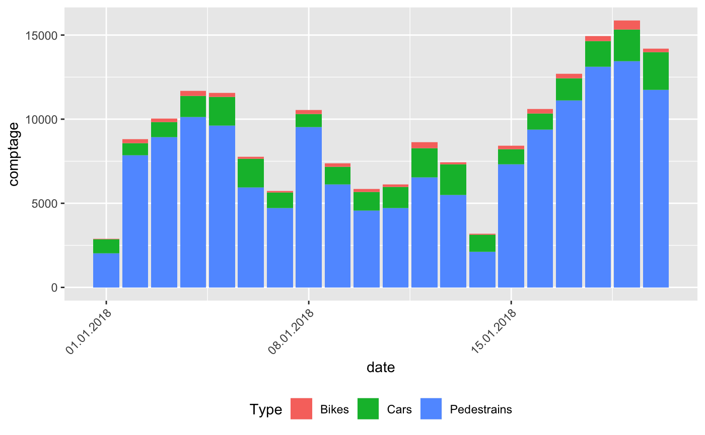
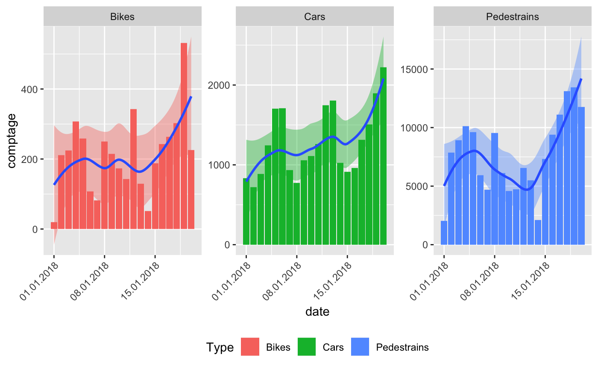
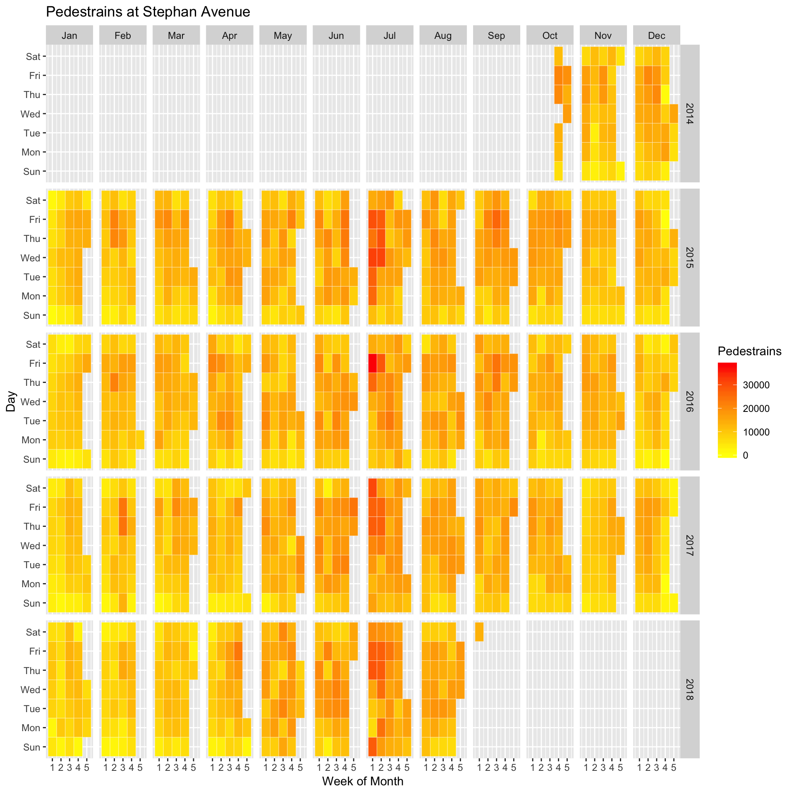

vignettes/Getting_started_with_the_R_package_EcoCounteR.Rmd
Getting_started_with_the_R_package_EcoCounteR.RmdThe R-package EcoCounteR is an API wrapper for data collected by https://www.eco-compteur.com. You can request available data from different Eco Counter installations by submitting the Id of the installation to different functions:
| Function name | Description | Example |
|---|---|---|
| get_EcoCounter_info() | request common information about an installation | get_EcoCounter_info(100020207) |
| get_EcoCounter_location() | request location of an installation | get_EcoCounter_location(100020207) |
| get_EcoCounter_data() | request data from an installation | get_EcoCounter_data(101020207) |
The following chapters show some examples how to use the R-package EcoCounteR.
First we load some needed packages. The function get_EcoCounter_info() will deliver some information about an installation located at Calgary in the Stephen Avenue. The only argument in get_EcoCounter_info() is the Id of the installation.
library(EcoCounteR)
library(leaflet)
library(htmltools)
EcoCounterId <- 100020207
info <- get_EcoCounter_info(EcoCounterId)| id | name | nameId |
|---|---|---|
| 101020207 | Stephen Avenue Pedestrian Counts | Z_101020207 |
| 102020207 | Stephen Avenue Cyclist Counts | Z_102020207 |
| 103020207 | Stephen Avenue Car Counts | Z_103020207 |
For later requests we need the coloumn id to get data from this specific installation.
The function get_EcoCounter_info() can also handle multiple EcoCounterIds, e.g.:
| id | name | nameId |
|---|---|---|
| 101020207 | Stephen Avenue Pedestrian Counts | Z_101020207 |
| 102020207 | Stephen Avenue Cyclist Counts | Z_102020207 |
| 103020207 | Stephen Avenue Car Counts | Z_103020207 |
| 101017181 | 7 Street South of 3 Ave SW_SB | Z_IN_101017181 |
| 102017181 | 7 Street South of 3 Ave SW_NB | Z_OUT_102017181 |
To get an overview of the installations, we can use the function get_EcoCounter_location(). This function extracts the coordinates from the installations. We can insert the result directly to the R-package leaflet.
Now we can use the extracted information to request data. First we load some packages which help to analyse and visualise data.
From section 2 we know different sub-Ids of an installation. We allocate the different sub-Ids:
Now it’s time to request some data. For that purpose the function get_EcoCounter_data() can be used. The function takes just one required argument: EcoCounterId. Note: This is not the same EcoCounterId as inserted in get_EcoCounter_data()and get_EcoCounter_location(). The function get_EcoCounter_data() can take more arguments to specify the request.
| Argument | Description | Example |
|---|---|---|
| EcoCounterId | sub-Id to request specific installation | 101020207 |
| from | Start date of the requested data in the form “YYYYMMDD” | “20180101” |
| to | End date of the requested data in the form “YYYYMMDD” | “20180110” |
| step | Frequency of saved data: 2 (15 min), 3 (hourly), 4 (daily), 5 (weekly), 6 (monthly), 7 (yearly) | step = 3 |
Some examples:
## get daily saved data for the day before yesterday and yesterday
get_EcoCounter_data(101020207)
## get daily saved data from 1st January 2018 until yesterday
get_EcoCounter_data(101020207, from = "20180101")
## get hourly saved data from 1st January 2018 to 10th January 2018
get_EcoCounter_data(101020207, from = "20180101", to = "20180110", step = 3)Now let’s put things into practical terms. We request data from 1st to 20th January 2018. With mutate(Type = XXX) we add a new coloum to the data.frame with the specific type of request.
Stephan_Avenue_Ped_daily <- get_EcoCounter_data(Stephan_Avenue_Ped, from = "20180101", to = "20180120") %>%
mutate(Type = "Pedestrains")
Stephan_Avenue_Bike_daily <- get_EcoCounter_data(Stephan_Avenue_Bike, from = "20180101", to = "20180120") %>%
mutate(Type = "Bikes")
Stephan_Avenue_Car_daily <- get_EcoCounter_data(Stephan_Avenue_Car, from = "20180101", to = "20180120") %>%
mutate(Type = "Cars")
Stephen_Avenue_complete <- bind_rows(Stephan_Avenue_Ped_daily, Stephan_Avenue_Bike_daily, Stephan_Avenue_Car_daily)## Warning in bind_rows_(x, .id): Unequal factor levels: coercing to character## Warning in bind_rows_(x, .id): binding character and factor vector,
## coercing into character vector
## Warning in bind_rows_(x, .id): binding character and factor vector,
## coercing into character vector
## Warning in bind_rows_(x, .id): binding character and factor vector,
## coercing into character vectorIn the last line all single data.frames are combined to a single data.frame. You can further analyse this data to your own needs, e.g. find the days with the most appearance per type:
## # A tibble: 3 x 4
## # Groups: Type [3]
## date comptage id Type
## <dttm> <int> <chr> <chr>
## 1 2018-01-19 00:00:00 13436 101020207 Pedestrains
## 2 2018-01-19 00:00:00 532 102020207 Bikes
## 3 2018-01-20 00:00:00 2223 103020207 CarsThe following examples shows the visualisation of the data.
g <- ggplot(Stephen_Avenue_complete, aes(x = date, y = comptage, fill = Type)) +
geom_bar(stat = "identity") +
scale_x_datetime(labels = date_format("%d.%m.%Y")) +
theme(legend.position = "bottom",
axis.text.x = element_text(angle = 45, hjust = 1))
plot(g)
g2 <- g +
scale_x_datetime(labels = date_format("%d.%m.%Y")) +
facet_wrap(~Type, scales = "free_y") +
geom_smooth(show.legend = FALSE) +
theme(legend.position = "bottom",
axis.text.x = element_text(angle = 45, hjust = 1))
plot(g2)
Stephan_Avenue_Ped_daily <- get_EcoCounter_data(Stephan_Avenue_Ped,
from = "20141023",
to = "20180901") %>%
mutate(weekday = wday(date, label = TRUE),
week = week(date),
monthweek = ceiling(day(date) / 7),
year = year(date),
month = month(date, label = TRUE)) %>%
na.omit()ggplot(Stephan_Avenue_Ped_daily, aes(monthweek, weekday, fill = comptage)) +
geom_tile(colour = "white") +
facet_grid(year~month) +
scale_fill_gradient(low = "yellow", high = "red") +
labs(x = "Week of Month",
y = "Day",
title = "Pedestrains at Stephan Avenue",
fill = "Pedestrains")